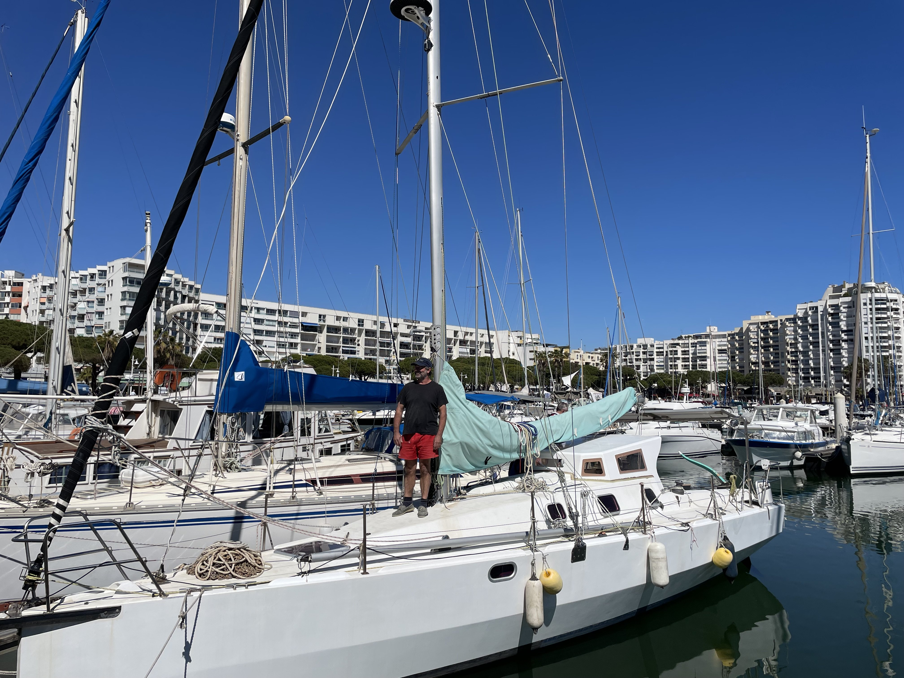
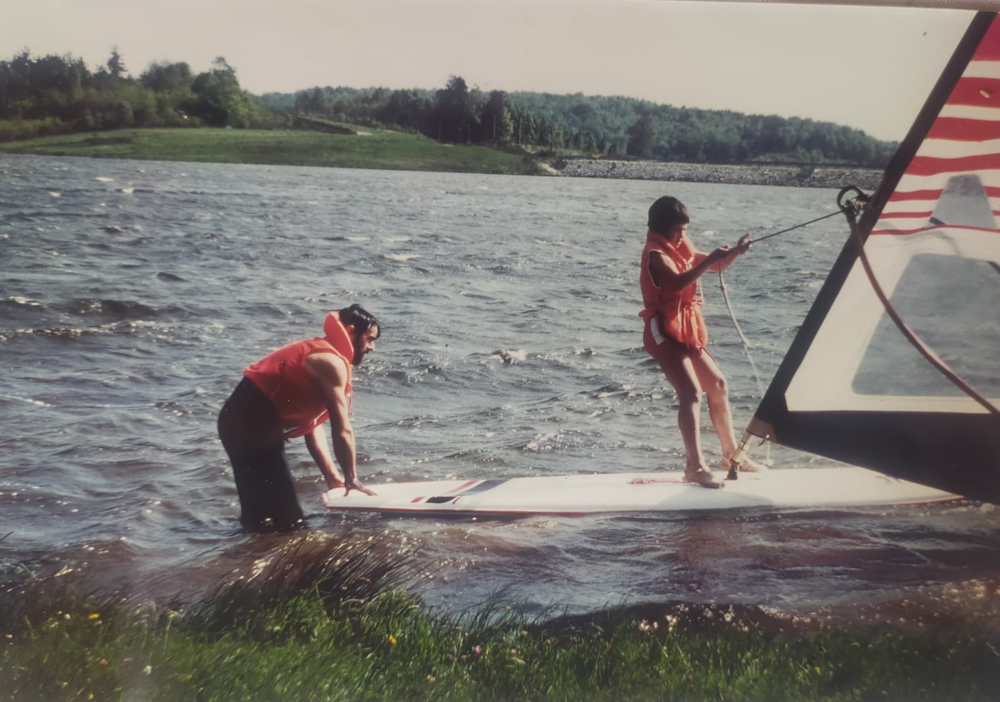
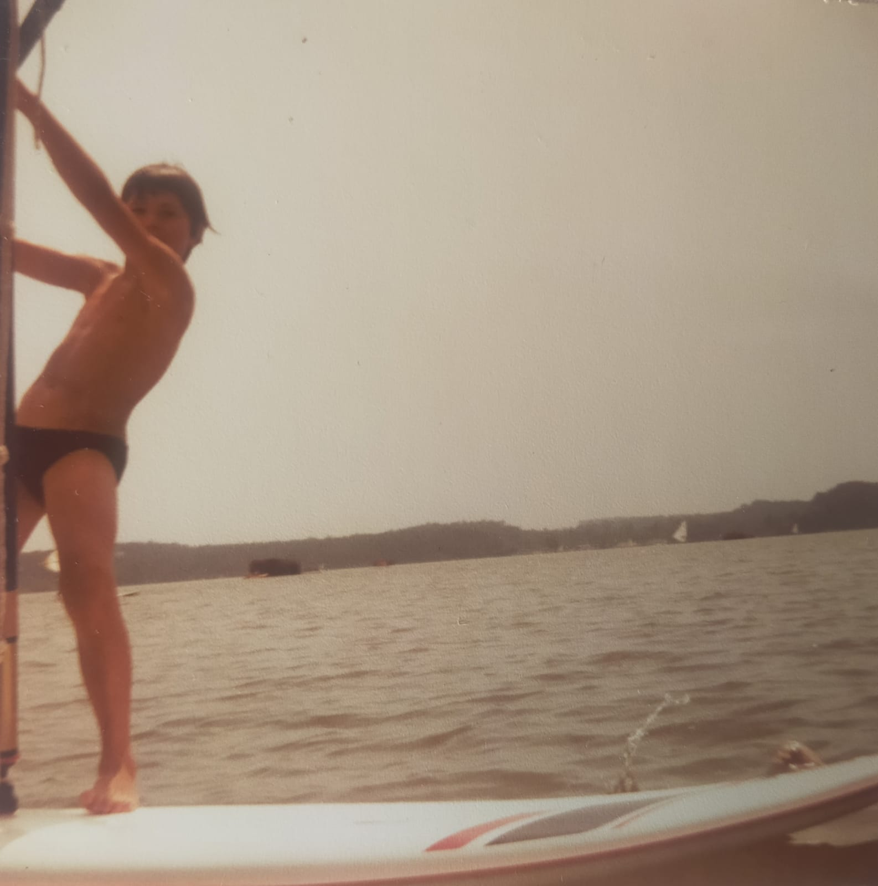
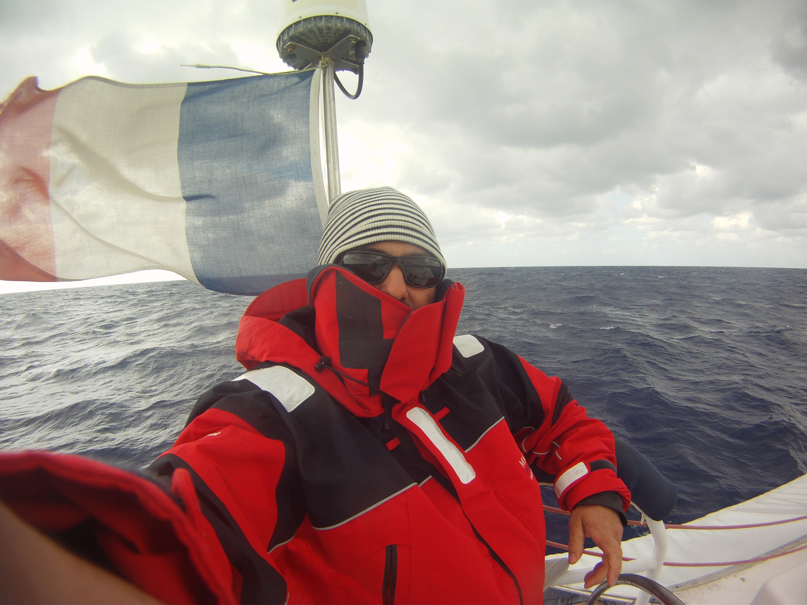
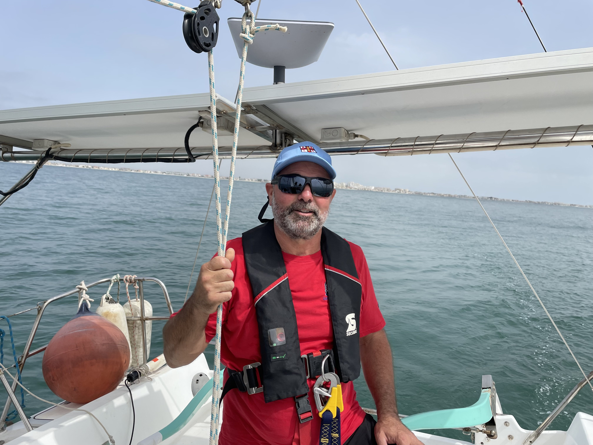

Qui suis-je :
Je suis né le 13 septembre 1971 dans l’Aveyron. J’ai pris mon premier
bain en mer en avril 1972 au Grau d’Agde, là où tous les ans un oncle
nous prêtait son chalet en bois aux cabanes du Grau d’Agde, dans les
tamaris.
J’ai commencé mon apprentissage à la voile sur les lacs de Pont de
Salars (12)avec la FOL et de Montézic à Saint Gervais (12) en optimist
puis en planche à voile. J’ai fait mes études à Rodez, à Souillac (46)
puis à Saint Etienne de Montluc (44) à proximité de Nantes. J’ai
découvert la voile habitable en 09 1991 grâce à la CCAS*. Un séjour de
15 jours entre Saint Cyprien (66) et Minorque.
Depuis la navigation est resté ancré en moi. Je suis passionné de la
mer, je suis moniteur de plongée sous-marine (MF1) et j'ai passé en
2010 une formation pour devenir skippeur (capitaine 200 voile), afin
de pouvoir naviguer en toute sécurité avec mes jeunes enfants et
encadrer des séjours pour la CCAS.*
Mon terrain de jeu est
partagé entre la méditerranée de la Corse à Gibraltar et l’Atlantique,
de la Bretagne sud au golfe de Gascogne, à la mer d’Iroise et jusqu’en
Irlande
*Caisse Centrale d’Action Sociale
Fabien Maury



